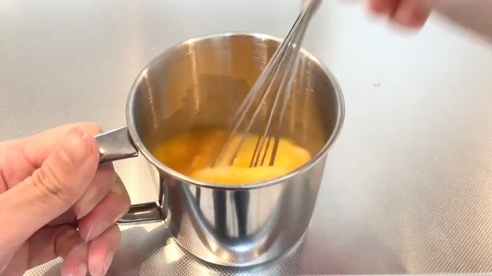
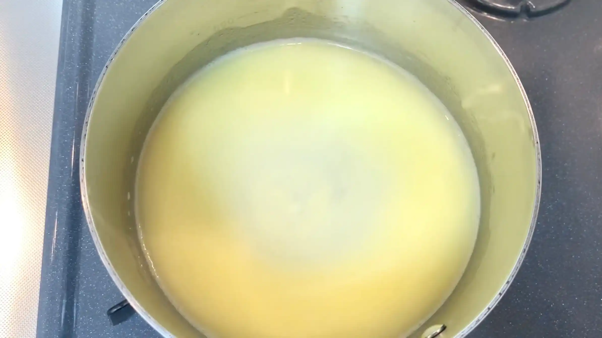
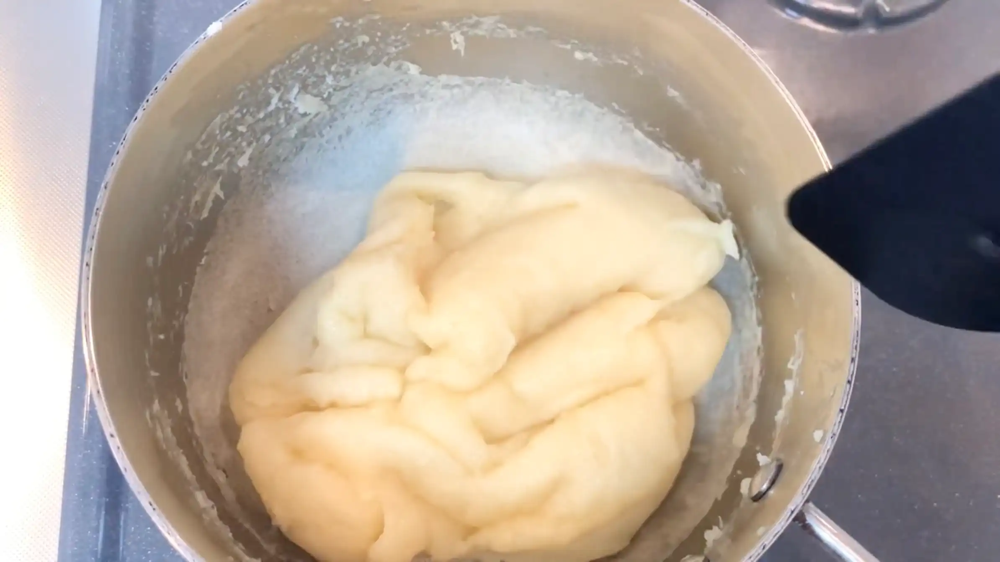
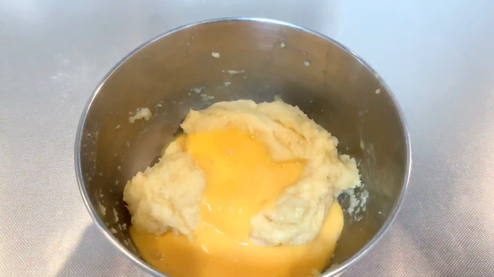
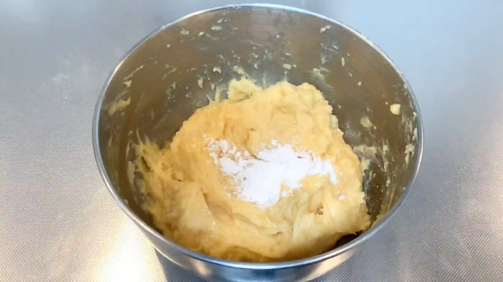
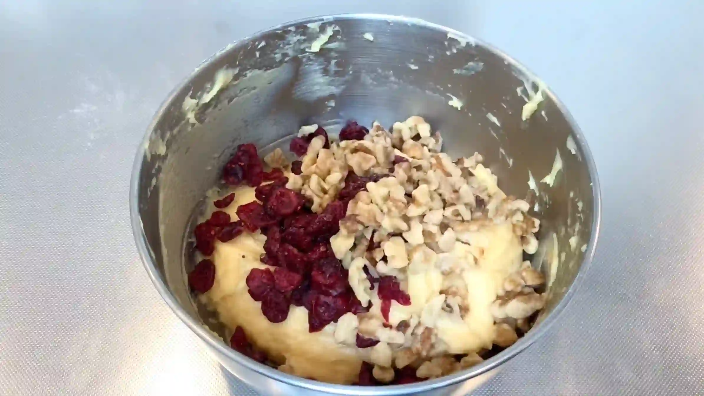
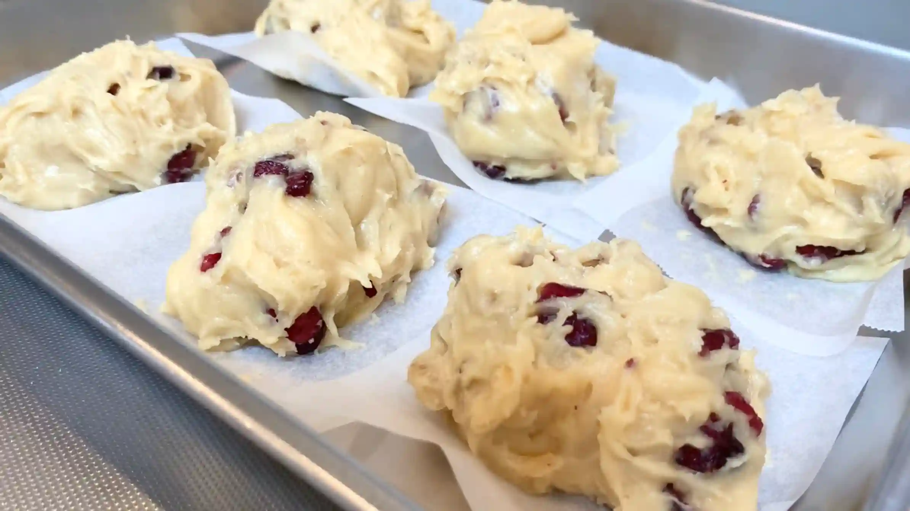
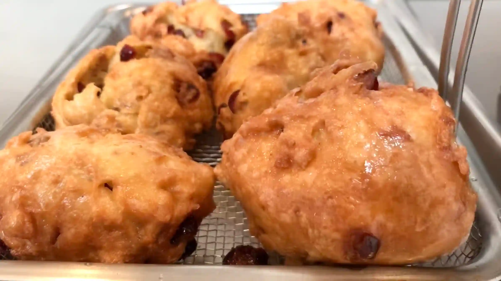
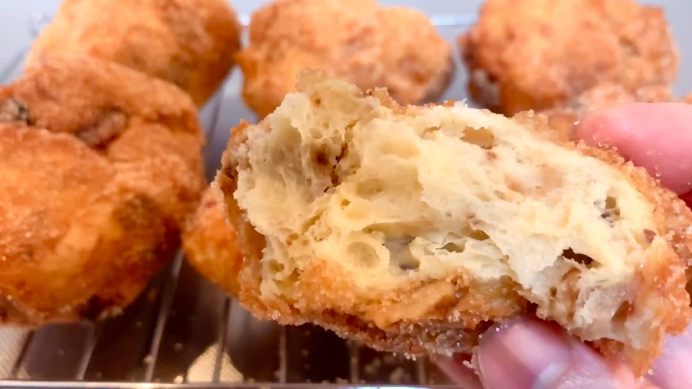

材料 6個分
※粉量を変えると自動計算されます
生地
具材
仕上げ
作り方
生地
STEP 1
粉をふるい、卵を溶いておく
粉をあらかじめふるっておくことで、ダマになるのを防ぎます。卵は後の工程で使うため、ここで溶いておくと作業がスムーズになります。
粉をあらかじめふるっておくことで、ダマになるのを防ぎます。卵は後の工程で使うため、ここで溶いておくと作業がスムーズになります。

STEP 2
鍋に水とバターを入れ、沸騰直前まで温める
バターをしっかり溶かし、水と一緒に温めます。完全に沸騰させる必要はありませんが、バターが溶けて全体が温まった状態にしておきます。
バターをしっかり溶かし、水と一緒に温めます。完全に沸騰させる必要はありませんが、バターが溶けて全体が温まった状態にしておきます。

STEP 3
粉を入れ弱火〜中火くらいにかけ、3〜4分混ぜる
鍋底から生地を練るように混ぜながら加熱します。粉に水分をしっかり吸わせながら余分な水分を蒸発させます。ここで水分が多く残っていると、卵を加えたときに生地がゆるくなりすぎるため、適度に水分を飛ばすことが大切です。焦げつかないよう、火加減に注意しながら混ぜます。
鍋底から生地を練るように混ぜながら加熱します。粉に水分をしっかり吸わせながら余分な水分を蒸発させます。ここで水分が多く残っていると、卵を加えたときに生地がゆるくなりすぎるため、適度に水分を飛ばすことが大切です。焦げつかないよう、火加減に注意しながら混ぜます。

STEP 4
生地をボウルに取り出し、卵を3回に分け加えながら混ぜる
卵は一度に加えると生地がゆるくなりすぎることがあるため、3回程度に分けて加え、その都度しっかり混ぜ合わせます。
卵は一度に加えると生地がゆるくなりすぎることがあるため、3回程度に分けて加え、その都度しっかり混ぜ合わせます。

STEP 5
ベーキングパウダーを入れさらに混ぜる
ベーキングパウダーを加えることで、揚げたときに生地がふんわりと膨らみやすくなります。粉っぽさが残らないよう、全体に均一になるまで混ぜ合わせます。
ベーキングパウダーを加えることで、揚げたときに生地がふんわりと膨らみやすくなります。粉っぽさが残らないよう、全体に均一になるまで混ぜ合わせます。

STEP 6
クランベリー、くるみを入れ混ぜる
具材は生地全体に偏らないよう、さっくりと混ぜ合わせます。混ぜすぎると生地が扱いにくくなるため、具材が均一に行き渡れば十分です。
具材は生地全体に偏らないよう、さっくりと混ぜ合わせます。混ぜすぎると生地が扱いにくくなるため、具材が均一に行き渡れば十分です。

STEP 7
生地を6等分してオーブンシートにのせる
生地をできるだけ均等に6等分すると、揚げ上がりの大きさや火の通りを揃えやすくなります。
生地をできるだけ均等に6等分すると、揚げ上がりの大きさや火の通りを揃えやすくなります。

STEP 8
160℃の油で10分程揚げる
油の温度が高すぎると表面だけが先に色づいて中まで火が通りにくくなるため、温度を保ちながらじっくり揚げるのがポイントです。表面の色だけで判断せず、中まで火が通っていることを確認します。
油の温度が高すぎると表面だけが先に色づいて中まで火が通りにくくなるため、温度を保ちながらじっくり揚げるのがポイントです。表面の色だけで判断せず、中まで火が通っていることを確認します。

STEP 9
グラニュー糖とシナモンをまぶす
揚げたてのうちにグラニュー糖とシナモンをまぶすと、表面に付きやすくなります。これで美味しいクラプフェンの完成です。
揚げたてのうちにグラニュー糖とシナモンをまぶすと、表面に付きやすくなります。これで美味しいクラプフェンの完成です。

動画でチェック
おいしく作るためのワンポイントコラム
こんにちは、おなおドーナツです！
今回は、ドイツの伝統的な揚げパンであり、軽い生地なのにしっとりジューシーな食感が魅力の『クラプフェン』をおうちで作っていきます。シュー生地を油で揚げるプロセスをより簡単に、そして本場のお店の味に近づけるための3つのコツをまとめました。
① 粉の配合のコツ
今回のレシピでは、強力粉と薄力粉を半分ずつの割合で合わせるのがポイントです。強力粉の持つ弾力と薄力粉の歯切れの良さをバランスよく組み合わせることで、水分をたっぷり吸い込みながらもダレにくい扱いやすい生地になります。また、牛乳ではなく水を使うことで、外側がサクッと軽やかに、内側はしっとりとした食感に揚がります。
② 生地作りのコツ
鍋に材料を入れて火にかけたら、3分から3分30秒ほどしっかりと練り上げるのがポイントです。火にかけてでんぷんをしっかり糊化させることで、卵を加えたときに綺麗に繋がり、油に入れたあと内側からふっくらと大きく膨らむ生地に仕上がります。
③ 具材のコツ
本場の風味豊かな味わいを再現するために、生地の中にレーズン（クランベリーなど）と胡桃を粉の量と同じくらいたっぷりと混ぜ込みます。日本のレシピではレーズンのみが多いですが、ナッツ類を贅沢に加えることで、シュー生地のしっとり感に香ばしい歯ごたえが加わり、味の深みがアップします。油の温度は160℃の低めの温度で10分ほどじっくり揚げて中まで火を通しましょう。
決して映えるような見た目ではありませんが、侮るなかれです。揚げたてにシナモンシュガーをまぶしてガブッと頬張れば、口いっぱいに幸せが広がります。新しい美味しさに出会うわくわく感をぜひ体験してみてください。それでは、おうちパン作りの時間を一緒に満喫しましょう！
今回は、ドイツの伝統的な揚げパンであり、軽い生地なのにしっとりジューシーな食感が魅力の『クラプフェン』をおうちで作っていきます。シュー生地を油で揚げるプロセスをより簡単に、そして本場のお店の味に近づけるための3つのコツをまとめました。
① 粉の配合のコツ
今回のレシピでは、強力粉と薄力粉を半分ずつの割合で合わせるのがポイントです。強力粉の持つ弾力と薄力粉の歯切れの良さをバランスよく組み合わせることで、水分をたっぷり吸い込みながらもダレにくい扱いやすい生地になります。また、牛乳ではなく水を使うことで、外側がサクッと軽やかに、内側はしっとりとした食感に揚がります。
② 生地作りのコツ
鍋に材料を入れて火にかけたら、3分から3分30秒ほどしっかりと練り上げるのがポイントです。火にかけてでんぷんをしっかり糊化させることで、卵を加えたときに綺麗に繋がり、油に入れたあと内側からふっくらと大きく膨らむ生地に仕上がります。
③ 具材のコツ
本場の風味豊かな味わいを再現するために、生地の中にレーズン（クランベリーなど）と胡桃を粉の量と同じくらいたっぷりと混ぜ込みます。日本のレシピではレーズンのみが多いですが、ナッツ類を贅沢に加えることで、シュー生地のしっとり感に香ばしい歯ごたえが加わり、味の深みがアップします。油の温度は160℃の低めの温度で10分ほどじっくり揚げて中まで火を通しましょう。
決して映えるような見た目ではありませんが、侮るなかれです。揚げたてにシナモンシュガーをまぶしてガブッと頬張れば、口いっぱいに幸せが広がります。新しい美味しさに出会うわくわく感をぜひ体験してみてください。それでは、おうちパン作りの時間を一緒に満喫しましょう！


ドイツの揚げパン『クラプフェン』のレシピです！見た目は無骨ですが、シュー生地をベースにした独特の食感が最高においしい一品！コラムでは「粉の配合のコツ」「生地作りのコツ」「具材のコツ」の3つのポイントをご紹介します。